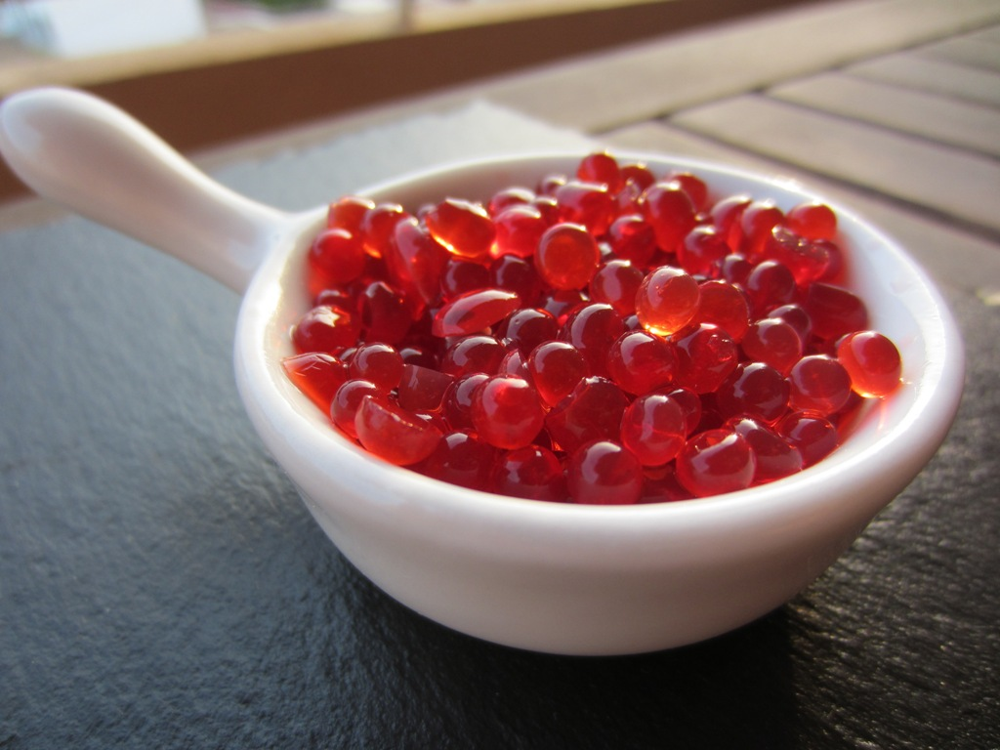

Lavaremos muy bien los 500g de fresas y las secaremos con cuidado para no aplastarlas. Les retiramos el rabito y ahora las trituraremos con un tenedor o par obtener una consistencia mas suave una batidora de vaso.
Una vez triturada la fresa incorporaremos los 500g queso fresco batido y lo batiremos de nuevo para que quede una mezcla homogenea

Calentaremos el agar en el microondas por unos 2 o 3 minutos. Pasado el tiempo lo retiramos y esperamos a que enfrie y lo juntamos con la mezcla hecha antes y tambien agregamos los 5ml de vainilla
